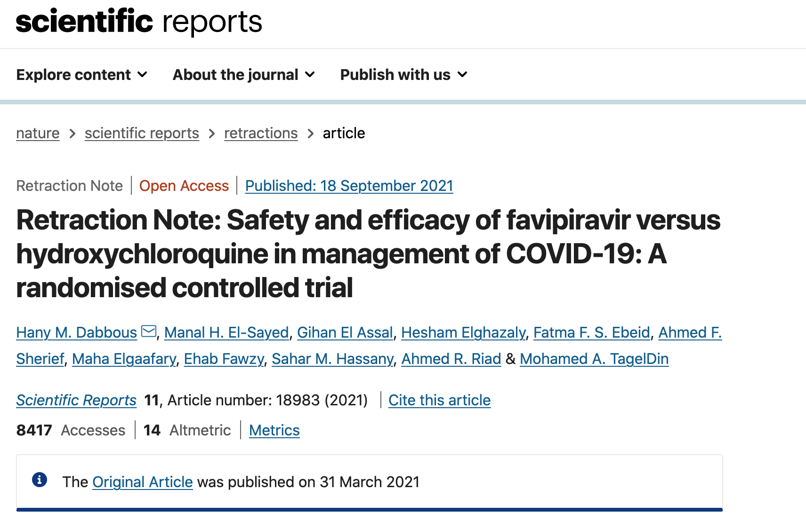
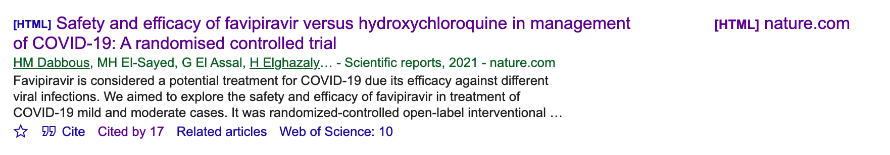
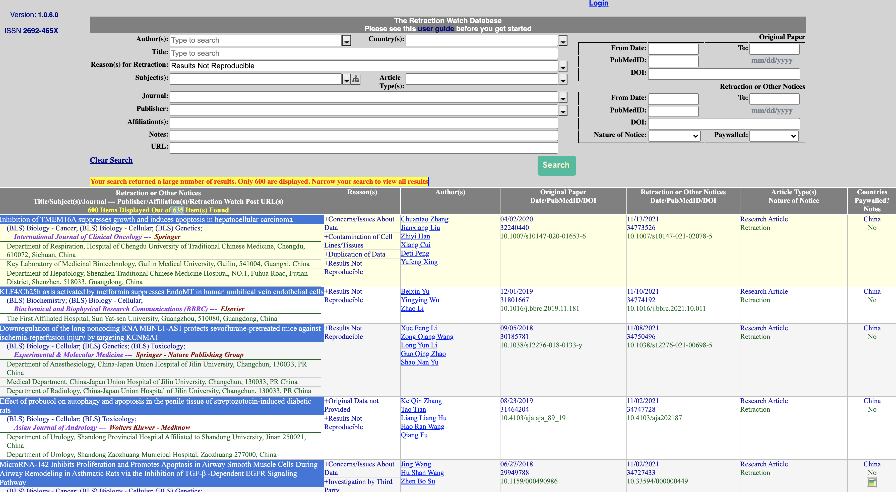

1 How do reproducible and trustworthy workflows impact data science?
Learning Objectives
- Define data science, and the related terms reproducible and audible analysis
- Give examples of workflows that are considered reproducible and trustworthy in the context of a data analysis
- Explain why data analysis benefit from reproducible and audible workflows
- Provide real-life examples of how a failure in reproducible and trustworthy workflows has negatively impacted the outcome of a data analysis project
1.1 Data science
The study, development and practice of reproducible and auditable processes to obtain insight from data.
From this definition, we must also define reproducible and auditable analysis:
Reproducible analysis: reaching the same result given the same input, computational methods and conditions \(^1\).
- input = data
- computational methods = computer code
- conditions = computational environment (e.g., programming language & it’s dependencies)
Auditable/transparent analysis: a readable record of the steps used to carry out the analysis as well as a record of how the analysis methods evolved \(^2\).
1.1.1 Why adopt this definition of data science?
- It is important that insights from data science are trustworthy!
To quote Russel Hardin, “Trust involves giving discretion to another to affect one’s interests.” Data science insights are very often used to make important, real-life decisions that impact people and the environment (e.g., loan/credit approval, access to certain medical treatments, job applicant interview selection, criminal justice sentencing recommendations, etc). It is important that such analyses be trustworthy!
- Reproducible and auditable methods are one of the expectations for trustworthy data science!
Don Tapscott, one of the authors of The Naked Corporation, describes trust as: “honest, considerate, accountable, and transparent”. Accountability and transparency are not sufficienct for trust, but they are necessary.
1.1.2 We cannot trust non-reproducible and non-auditable analyses because they:
lack evidence that the results could be regenerated (is the analysis is reliable?)
we don’t know enough details of how they were created (is the analysis correct?)
there is an insufficient record of how and why analysis decisions were made (was a complete analysis performed?)
1.2 What makes trustworthy data science?
Some possible criteria:
It should be reproducible and auditable
It should be correct (in the context of both statistics and software)
It should be complete
It should be fair, equitable and honest
There are many ways a data science can be untrustworthy… In this course we will focus on workflows that can help build trust. More training in data science ethics will be needed to help round out your education in how to do this. Further training in statistics and machine learning will also help with making sure your analysis is correct.
Is this really important?
Yes! There are both small and big ways this can impact your work.
1.2.1 An example with large impact

A research paper was published in March 2021 that claimed that a drug, Favipiravir, was a safe and effective alternative to another drug, hydroxychloroquine (a medication commonly used to prevent or treat malaria), in mild or moderate COVID-19 infected patients.
In September, 2021 the paper we retracted by the editors - in part due to reproducibility issues:
“After concerns were brought to the Editors’ attention after publication, the raw data underlying the study were requested. The authors provided several versions of their dataset. Post-publication peer review confirmed that none of these versions fully recapitulates the results presented in the cohort background comparisons, casting doubt on the reliability of the data. Additional concerns were raised about the randomisation procedure, as the equal distribution of male and female patients is unlikely unless sex is a parameter considered during randomisation. However, based on the clarification provided by the authors, sex was not considered during this process. The Editors therefore no longer have confidence in the results and conclusions presented.”
The problem doesn’t just stop once the article is retracted… Between the time the article was published and retracted, the article was cited 17 times!

1.2.2 How big is this problem?
Searching the Retraction Watch Database for “Results Not Reproducible” we find 635 records that match!

1.2.3 Does this just impact academia?
No! The use of non-reproducible tools can impact government and industry as well! Consider this case:
Source: https://www.bbc.com/news/uk-scotland-edinburgh-east-fife-53893101
What went wrong?
An audit found that the wrong spreadsheet matrix was copied over, and the calculation for only 4 air changes per hour, instead of the required 10 per hour, was done. This error was missed several times by human review of the spreadsheet.
How could this have been prevented via using reproducible tools?
If code instead of a spreadsheet was used for calculations, then unit tests could have been written to check the calculations. Also, the code could be abstracted to a well named function, or a function with well named arguments, that could have been more easily detected than a hidden formula in a spreadsheet.
1.3 Examples with relatable impact
Let’s talk about some of these by sharing data-related workflows from the trenches:
Think and write down a non-reproducible, or non-auditable, workflow you have used before at work, on a personal project, or in course work, that negatively impacted your work somehow (make sure to include this in the story).
As a Masters student, I started to use R to do my statistical analysis. I obtained the results I needed from running my code in the R console and copying the results into the word document that was my manuscript. Six months later we were working on revisions requested by the reviewers and I could not remember which version of the code I ran to get my results. I eventually figured it out through much trial and error, but the process was inefficient and very stressful.
–Tiffany Timbers
When prompted, paste your story in the Google doc (link to be shared in class)
Follow the instructions below for each story share in the class stories from the trenches Google document.
Read the story and reflect on which of the themes listed below was likely the biggest cause of the reproducibility or transparency failure described in the story.
Label the story with the emoji corresponding to the chosen theme from the table below:
| Reproducibility and transparency themes | Emoji label |
|---|---|
| Code | ⌨️ (keyboard) |
| Computational environments | 💻 (laptop) |
| Software design | 💾 (floppy disk) |
| Data analysis pipeline | ➡️ (right arrow) |
| Documentation | 📄 (page facing up) |
| Project organization | 🗃 (card file box) |
| Randomness | 🎲 (game die) |
| Version control | 📜 (scroll) |
Follow the instructions below for each story share in the class stories from the trenches Google document.
Re-read the story and reflect on what the primary cost was from the reproducibility or transparency failure described in the story.
Label the story with the emoji corresponding to the chosen cost from the table below:
| Reproducibility and transparency failure cost | Emoji label |
|---|---|
| Financial | 💸 (money with wings) |
| Reputational | 🎖 (military medal) |
| Time | 🕰 (mantelpiece clock) |
| Unfixable error | 💥 (collision) |
| Work discarded. | 🗑️(wastebasket) |
Source: http://www.bonkersworld.net/building-software/
1.4 Wrap up
We define data science as the study, development and practice of reproducible and auditable processes to obtain insight from data.
Both bolded parts of the definition are important! This course will primarily focus on the first part, but you will get the opportunity to practice the second part in your group projects for this course.
Many ways a data analysis can be untrustworthy… just because a data analysis is reproducible and auditable, doesn’t mean it is fully trustworthy. But a data analysis is not trustworthy if it cannot be reproduced or studied…